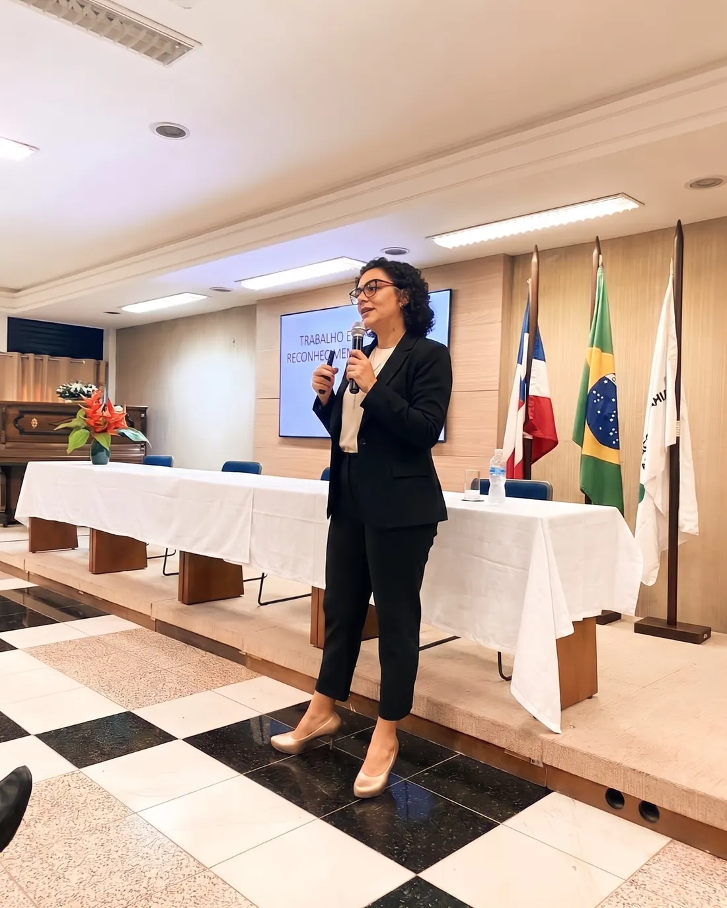

NR-1 em vigor: fatores psicossociais sem checklist vazio
O que documentar, como sustentar evidências e como transformar fatores psicossociais em linguagem útil para gestão, prevenção e fiscalização.
Pedir informações →Conteúdo clínico aplicado em linguagem de gestão, para empresas, eventos setoriais, RH, SESMT e lideranças. Sem palestra motivacional: método, NR-1, fatores psicossociais e quase três décadas de prática corporativa.

Quatro temas centrais, ajustáveis ao público, ao momento da empresa e ao objetivo do evento.
O que documentar, como sustentar evidências e como transformar fatores psicossociais em linguagem útil para gestão, prevenção e fiscalização.
Pedir informações →Como reconhecer sinais, conduzir primeiras conversas, diferenciar suporte de liderança e papel clínico, e evitar decisões improvisadas diante de sofrimento.
Pedir informações →Critérios técnicos para nomear melhor situações que envolvem adoecimento, valores violados, nexo causal, investigação interna e responsabilidade.
Pedir informações →Uma palestra editorial baseada no livro, para criar linguagem comum entre pessoas, liderança, saúde ocupacional e gestão.
Pedir informações →Para eventos com demanda mais específica, o tema pode ser ajustado ao contexto da empresa.
Para empresas e eventos com plateia distribuída. Inclui gravação enviada ao contratante e slides em PDF para distribuição interna.
Proposta conforme escopo
Para grandes eventos online com plateia ampla. Inclui mesmo entregável da modalidade padrão, com produção dedicada ao evento.
Proposta conforme escopo
Para empresas e eventos na região metropolitana de Salvador. Inclui gravação, slides em PDF e livro autografado para o organizador.
Proposta conforme escopo
Para eventos em capitais, cidades do interior e outras localidades. Mesmo entregável das presenciais, com deslocamento, hospedagem e per diem definidos conforme a cidade.
Proposta conforme escopo
Experiência com empresas e eventos setoriais, incluindo PetroRecôncavo, Alvopetro, ABRH-BA e ABRH Sergipe. 130+ palestras realizadas · mais de 10 mil profissionais treinados · 99% de avaliações positivas.
Envie o contexto do evento, público, objetivo e data prevista. A proposta volta com tema recomendado, formato e próximos passos.